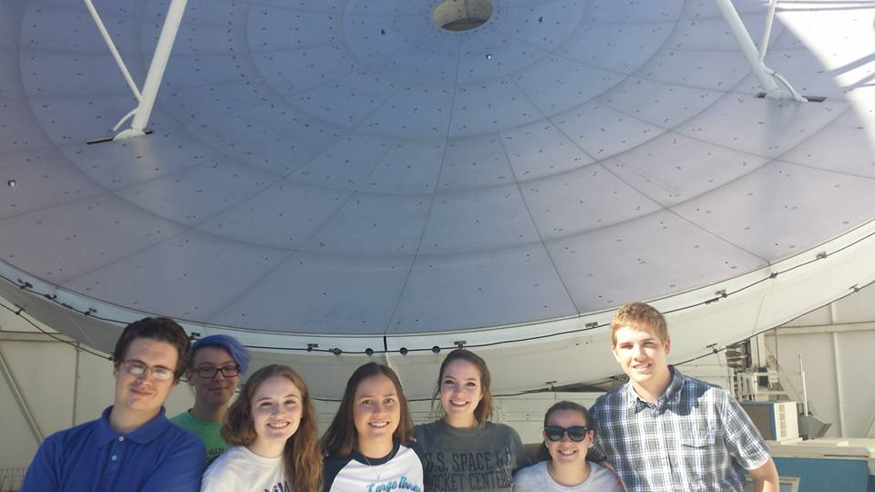
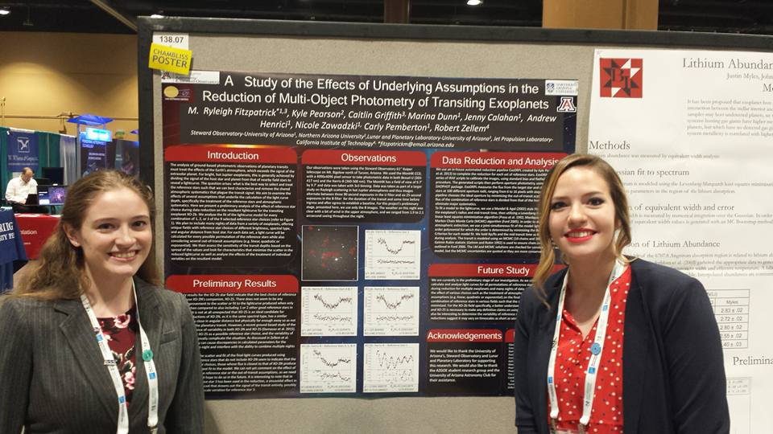
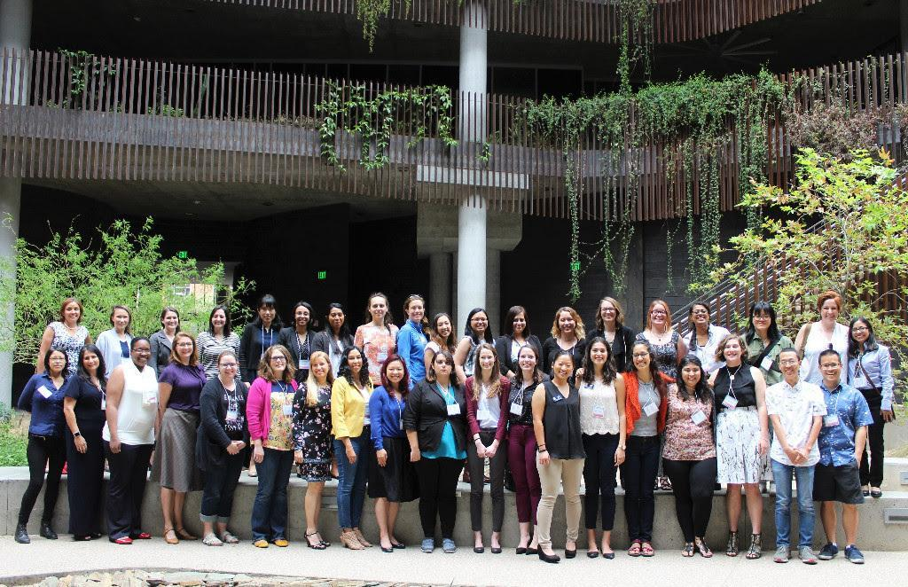

Hi! I'm Marina!
Hello! My name is Marina, and I'm a Masters student at the University of California, Riverside
where I currently study Engineering with a concentration in Data Science. My research involves
using Deep Learning to classify galaxy morphologies. My passions include astronomy, and STEM DEI
& outreach efforts.
I work as a Graduate Intern at NASA Goddard Space Flight Center on the Earth Information Systems team
migrating NASA observations, data processing workflows, and computer models to the commercial cloud.
I am currently researching optimal strategies for storing Earth Science Datasets in the commercial cloud.
Research
Classifying Galaxy Morphologies Using Bayesian Neural Networks to Support Future Astronomical Surveys (2021-Present)
I currently work on an interdisciplinary research project with Dr. Bahram Mobasher (UCR) and Dr. Aleksandra Ćiprijanović (Fermilab) as part of the M.S. Engineering: Data Science Program at UC Riverside. By the end of this decade, many new ground and space-based astronomical observatories will become operational (e.g. JWST, WFIRST/Roman Space Telescope, Euclid, LSST), generating massive amounts of data. These observatories will be capable of surveying the sky with even greater depth and resolution, allowing for detailed studies of objects, including galaxies. This includes the ability to look back at earlier stages of galaxies in the universe and determine the structure formation, which is essential for multiple aspects within astronomy, and addresses some of the most outstanding questions in cosmology. The ``morphology" of a galaxy provides insight into the formation process, and how its evolution has been influenced by both active environmental effects and internal processes. The endeavor to identify the many types of galaxies based on this is known as ``galaxy morphology classification," and is a first step in understanding the nature of galaxies, their structure, and evolution. This can subsequently provide information about strongly correlating properties, such as star formation history. Furthermore, as we currently still do not have a means of imaging the entirety of our own galaxy, the Milky Way, studying other galaxy morphologies may provide additional insight into its structure, such as how it may have gotten its spiral arms. Extracting and processing information, and conducting analysis on imaging data from future astronomical surveys in an optimal way will be a huge challenge, requiring incorporating innovative Data Science techniques. Machine Learning has been used in astronomy research for the last 25 years, with applications mostly for adaptive telescope optics, object classification and matching, and detector event filtering. Recent advances using Deep Learning, a sub-field of Machine Learning and a well-established method for classifying images, have allowed for better model accuracy when classifying galaxies. With the implementation of powerful tools like deep Neural Networks, specifically Bayesian Neural Networks which give model parameter uncertainties so we can assess the confidence of our predictions, we can make high-quality models and study galaxies more efficiently, which is essential for future astronomical big data surveys. Using Deep Learning methods for data from both LSST and the Hubble Space Telescope, we aim to show the novelty and importance of utilizing Bayesian Neural Networks to obtain quantified uncertainties in our predictions. This is critical to understanding how the model performs both when switching between simulated mock catalogs and real astronomical data, and on additional observational data releases. By doing this, we can demonstrate the effects of observational realism on model performance as it shifts between different data sources.
UA Astro Club Radio Astronomy Project (2015-2018)
As part of a research project offered through our undergraduate Astronomy Club with Dr. Yancy Shirley, my group observed with the Arizona Radio Observatory 12-Meter Telescope on Kitt Peak for several semesters, searching for dense, dark clouds that would be good candidates for future star formation. Some of the biggest questions regarding star formation include how frequently and rapidly stars are being created in specific environments. In order to better understand these questions, we observed 101 starless clumps identified in the Bolocam Galactic Plane Survey with specific molecular transitions that may indicate that the mass is increasing. We determined 6 that were actively collecting enough material to produce stars. Using a radiative transfer model, we found the rate at which these clumps were collecting material ranged approximately 500 - 2000 M⊙/Myr, meaning the cores’ masses will likely double in a free-fall time. This means they are increasing significantly and may begin producing stars in the near future. I learned a great deal about the publication process when I co-authored a paper on this work, which was published in the Astrophysical Journal in 2018.
Calahan, Jenny, et al. “Searching for Inflow Towards Massive Starless Clump Candidates Identified in the Bolocam Galactic Plane Survey.” The Astrophysical Journal, vol. 862, no. 1, July 2018, p. 63. arXiv.org, doi:10.3847/1538-4357/aabfea.

GUSTO/Balloon Telescopes/SuperCam (2016-2017)
In 2016, I began working in the Steward Observatory Radio Astronomy Laboratory (SORAL) with Dr. Chris Walker. My first several months consisted of writing significant proposal components, procuring instrument estimates, and managing large budgets for two NASA missions: the balloon-borne observatory, GUSTO, and the Europa Ice and Ocean Structure Seismometer (SIIOS). I collaborated on a large team of scientists and engineers from various institutions on a weekly basis. In addition, I also successfully organized preparations for the NASA site visit for GUSTO in January of 017, marking its transition into the next phase of the mission and $40 million in funding. The following year, I assisted in writing proposals for a high resolution, spherical, space-based, inflatable observatory called the Terahertz Space Telescope, which could be used for observations such as probing protoplanetary disks or observing outgassing on bodies like Europa. For this project, I built antenna prototypes in a welding shop, tested them, and presented preliminary results for the Office of Naval Research (ONR), resulting in full project funding. Based on these experiences, I knew I wanted to pursue working on upcoming large-scale space missions. In 2017, I continued working with SORAL, focusing on the lifecycle of the interstellar medium. In particular, I studied the impact of turbulence from nearby star formation on the evolution of giant molecular clouds (GMCs). Using data from the instrument SuperCam installed on the Submillimeter Telescope on Mt. Graham, I looked at a GMC known as R Coronae Australis (R CrA). This observation was part of a larger 500-degree survey of the Milky Way plane with the highest spatial resolution yet achieved in this wavelength range. This observation focused on a specific molecular transition of carbon monoxide, and by using the velocity of the molecule and width of the spectral line, I calculated gas temperature and column density (mass thickness). These measurements allowed me to use Python to create integrated intensity maps and determine the energy balance within the cloud. By doing this, I confirmed previous hypotheses that within R CrA, there is a young star generating outflows on both sides of the cloud, thus driving star formation.
AZGOE (2014-2016)
As a Freshman undergraduate, I sought out a research project working with Dr. Rob Zellem and Dr. Caitlin Griffith to characterize the atmospheres of transiting exoplanets. I regularly observed exoplanets like XO-2b, a hot Jupiter-like planet, with the 61” Kuiper telescope on Mt. Bigelow, and looked at the corresponding light curves of the host star’s light dimming as planets passed in front. I studied the change in effective radius of the planet in the U and B bands to determine the composition of the planet atmospheres. We found that certain data reduction techniques work better than others to help reveal the atmospheric characteristics, such as using brighter nearby reference stars. I presented this work at the 2016 American Astronomical Society conference with my peers. As this was my first experience with data analysis, I enjoyed working with my team on ways to reduce error when observing.


About Me
 I'm a first year graduate student studying data science at the University of California, Riverside. Previously, I got my Bachelors
of Science in Astronomy from the University of Arizona in 2018. I first became interested in space at the age of 4, and started
working at Vanderbilt Dyer Observatory in my hometown of Nashville, TN when I was 13. I began operating telescopes and giving
nightly tours and astronomy talks. My extensive operations experience continued to develop throughout high school, and on my
first day of college, I was chosen as a student telescope operator for Steward Observatory. After a year, I was promoted to
Chief Telescope Operator, where I oversaw nightly operations of the 21” and 16” Cassegrain telescopes on campus, and managed
a team of other student operators. In this role, I gained valuable telescope operations experience, and became a more confident
public speaker by giving astronomical talks at public observing nights.
I previously worked at Apple in Franklin, TN from 2018-2021 doing software and hardware repairs, as well as working in special
corporate programs for both the Data Analytics Server Engineering team, and Strategic Data Solutions Fraud Engineering team
as a Data Science Engineer.
I now currently work at NASA Goddard Space Flight Center, working on on migrating NASA data workflows and data models to the cloud.
I currently live in my homewtown of Nashville, TN. In my free time (and when the pandemic permits again), I enjoy kayaking,
hiking, traveling, and cooking. I also love spending time with my family, friends, partner, and my 3 cats.
I'm a first year graduate student studying data science at the University of California, Riverside. Previously, I got my Bachelors
of Science in Astronomy from the University of Arizona in 2018. I first became interested in space at the age of 4, and started
working at Vanderbilt Dyer Observatory in my hometown of Nashville, TN when I was 13. I began operating telescopes and giving
nightly tours and astronomy talks. My extensive operations experience continued to develop throughout high school, and on my
first day of college, I was chosen as a student telescope operator for Steward Observatory. After a year, I was promoted to
Chief Telescope Operator, where I oversaw nightly operations of the 21” and 16” Cassegrain telescopes on campus, and managed
a team of other student operators. In this role, I gained valuable telescope operations experience, and became a more confident
public speaker by giving astronomical talks at public observing nights.
I previously worked at Apple in Franklin, TN from 2018-2021 doing software and hardware repairs, as well as working in special
corporate programs for both the Data Analytics Server Engineering team, and Strategic Data Solutions Fraud Engineering team
as a Data Science Engineer.
I now currently work at NASA Goddard Space Flight Center, working on on migrating NASA data workflows and data models to the cloud.
I currently live in my homewtown of Nashville, TN. In my free time (and when the pandemic permits again), I enjoy kayaking,
hiking, traveling, and cooking. I also love spending time with my family, friends, partner, and my 3 cats.
Outreach
TIMESTEP
TIMESTEP is a program started by Dr. Gurtina Besla in 2015. As a student leader for the Tucson Initiative for Minority Engagement in Science and Technology Program (TIMESTEP), I led an effort to help undergraduates succeed in academia, learn professional development skills, and combat persistent stereotypes in STEM. In this capacity, I led discussions about my own experiences navigating my degree, and opportunities in industry-related careers. I coordinated hands-on workshops for battling stereotypes in academia, and developing skills to achieve career goals.
UA Astronomy Club
In 2014, I joined the UA Astronomy Club. I then began taking a more active role, first as the Outreach Coordinator, and later as President. It was important to me that students have access to STEM opportunities, so I expanded our outreach program to include a larger presence in the Tucson community, which has a large population of underserved Hispanic and Latinx individuals. By partnering with local schools, we provided telescopes and created activities aimed at teaching kids about planetary science, astrophysics, and math at no cost. I recruited female students to join me at telescope observing sessions at schools, exposing young students to strong female scientists. I also established resources for more junior undergraduates to be successful in their academic paths, including organizing a regular tutoring program for upper-division astrophysics classes, which was not offered through university tutoring services. I was a vocal advocate of additional funding for the organization in order to continue providing exceptional work, and now it is one of the largest undergraduate astronomy programs in the country.
Astronomy Camp
In 2015, I began assisting Dr. Don McCarthy in the annual Astronomy Camp program at Kitt Peak and Mt. Lemmon, looking after dozens of young students interested in science. For several weeks, in addition to overseeing the wellbeing of the students, I oversee operations and facilitate all-night observing sessions with professional telescopes. I teach them how to use image-processing software, and develop engaging educational content, including projects to strengthen computational programming skills throughout their visit. This program allows young students gain a deeper understanding of the space sciences and real research techniques, and provides a space to form friendships through community.
Memberships
I am currently, or have been, a member of the following organizations:
AMERICAN ASTRONOMICAL SOCIETY, WOMEN IN PHYSICS, WOMEN IN COMPUTING @ UCR,
WOMEN IN OPTICS, AMERICAN PHYSICAL SOCIETY, SOCIETY OF WOMEN ENGINEERS,
TUCSON INITIATIVE FOR MINORITY ENGAGEMENT IN SCIENCE AND TECHNOLOGY PROGRAM (TIMESTEP),
SOCIETY OF PHYSICS STUDENTS, AMERICAN INSTITUTE OF AERONAUTICS AND ASTRONAUTICS,
OUT IN STEM, ASSOCIATION FOR WOMEN IN SCIENCE AT UCR, UCR AND UA ASTRONOMY CLUBS,
UCR PHYSICS AND ASTRONOMY DEPARTMENTAL GRADUATE STUDENT ASSOCIATION,
UCR ELECTRICAL AND COMPUTER GRADUATE STUDENT ASSOCIATION,
Art
Realistic Portraits


Other Art